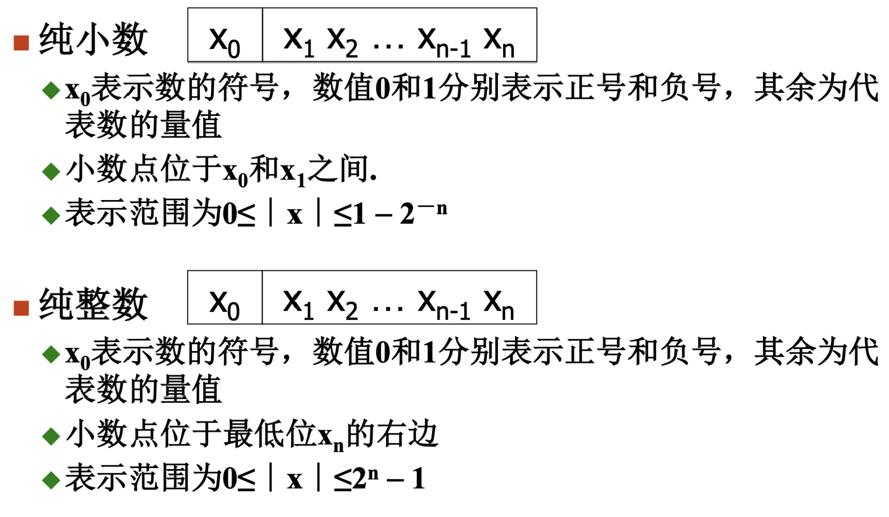
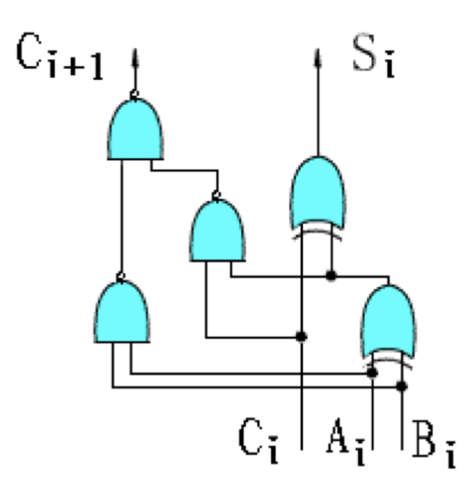
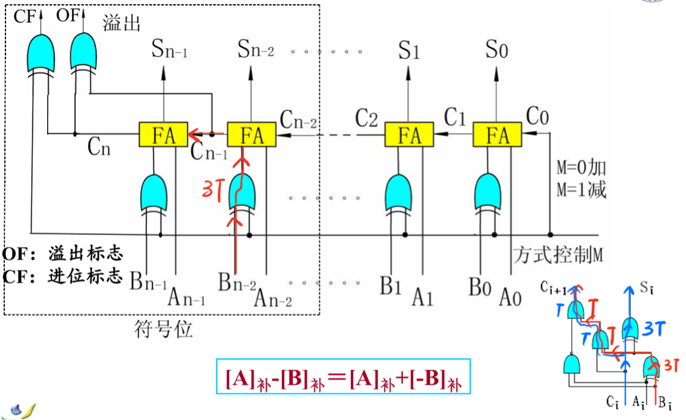
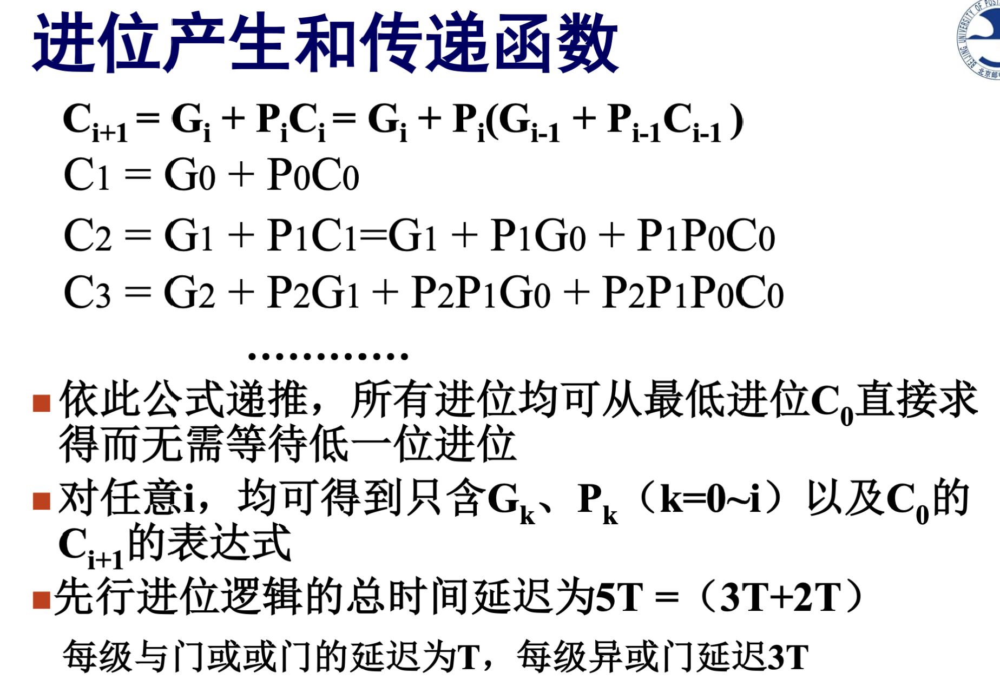

数据表示方法
定点数

机器码
将有符号数中的符号位进行数字化编码得到机器码，原有符号数称为真值。
### 原码
* 用第一位表示符号位，正0负1；
* 真值转化为原码只需根据正负添加符号位；
* 0有2种表示；
* 运算不便；
补码
- 正数补码和原码相同；
- 负数的原码转补码相当于+\(2^{n - 1}\)；从二进制码来看就是除符号位之外的数值位取反再加1；
反码
- 正数的补码和反码相同；
- 负数的反码转补码，除符号位之外的数值位取反；
移码
\[
[x_{移}] = x + 2^{n-1}
\]
* 移码可用来表示浮点数的指数；
* 移码和补码尾数相同，符号位相反；
补码运算
\[
[x + y]_{补} = [x]_{补} + [y]_补
\]
\[
[x - y]_{补} = [x]_{补} - [y]_{补}
\]
\[
-[y]_{补} = [-y]_{补}
\]
注：已知\(y\)的补码，求\(-y\)的补码，按位取反+1即可；
溢出检测方法
双符号位法
变形补码
正数符号位用00表示，负数符号位用11表示；
* 运算后符号位变01，表示发生正溢出；
* 运算后符号位变10，表示发生负溢出；
* 运算后符号位为00或11，未溢出；
* 正确结果应该是最高符号位；
通过以上结果可以发现，溢出的情况有以下两种：
*
最高有效位发生进位，但第1符号位（即正常补码的符号位）未发生进位；
* 第1符号位发生进位，但最高有效位未发生进位；
所以，现代计算机中直接采用单符号位法用于溢出检测。
单符号位法
\[ OF = C_f \oplus C_0 \]
其中：
* \(OF\)，溢出标志；
* \(C_f\)，符号位的进位；
* \(C_0\)，最高有效位的进位；
加法器
1位全加器
\[ S_i = A_i\oplus B_i \oplus C_i \]
\[ C_i = A_iB_i + (A_i\oplus B_i)C_i \]
电路图如下：

n位行波进位的补码加法器

观察上图，考虑\(n =
2\)的简单情况：
* 高1位等待低1位产生进位的时间为\(3T + 3T + T
+ T = 3T + 3T + 2T\)；
* 在得到低一位的进位后，产生该位进位需要\(2T\)；
* 最后产生溢出标志和进位标志需要\(3T\)；
所以对于\(n\)位行波进位加法器，时间延迟为\(3T + 3T + (n - 1) * 2T + 2T + 3T = （2n + 9)T\)；
如果不考虑溢出检测，最后不需要通过\(2T + 3T\)，直接产生结果需要\(3T\)，时间延迟为\(3T + 3T + 2(n - 1)T + 3T = 2(n - 1)T + 9T\)；
先行进位加法器
加法器进位链的基本逻辑关系为：
\[
C_{i + 1} = A_iB_i + (A_i+B_i)C_i
\]
令：
* \(G_i = A_iB_i\)，本地进位；
* \(P_i = A_i +
B_i\)，进位传递条件；
于是：
\[
C_{i+1} = G_i + P_iC_i
\]
由此可以递推出如下关系：
